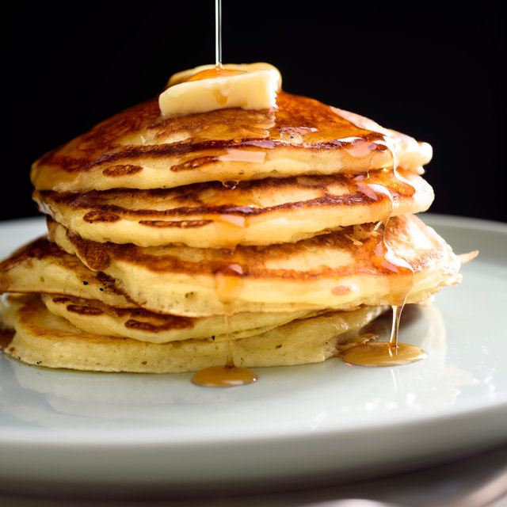

Buttermilk Pancakes

A recipe for the fluffiest, most delicious pancakes you'll ever make
This easy pancake recipe is perfect for anyone looking for quick and delicious breakfast. It takes just 25 minutes to prepare and is super easy to make.
Now, let's get started with the ingredients!
Ingredients:
- 2 cups of flour
- 3 tablespoons sugar
- 1½ teaspoons baking powder
- 1½ teaspoons baking soda
- 1¼ teaspoons salt
- 2½ cups buttermilk
- 2 large eggs
- 3 tablespoons unsalted butter, melted
- Vegetable, canola or coconut oil for the pan
Steps
- Mix flour, sugar, baking powder, baking soda, and salt in a large bowl.
- In a separate bowl, beat together buttermilk, milk, eggs, and melted butter.
- Heat a lightly oiled griddle or frying pan over medium-hight heat. You can flick water across the surface and if it beads up and sizzles, it's ready.
- Pour the wet mixture into the dry mixture; use a wooden spoon or fork to mix until it's just blended together.
- Pour the batter on the preheated griddle, using approximately 1/2 cup for each pancake. Cook until bubbles appear on the surface
- Flip with a spatula and cook until browned on the other side.
- Serve hot and enjoy!